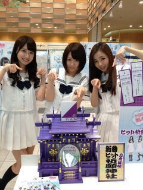
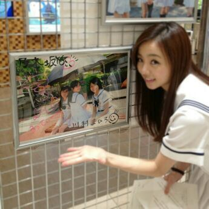

| 2013/07 19 Fri | 川村真洋 よしっ、ダンスを覚える前に 親に電話をしよう☆１日1回連絡 とってまとぅーー オーホッホッ( ≧▽≦) |
Hello♪こんにちわあ\(・∨・)/
ろってぃーです！
今日は、埼玉県にある
大ーーーきな サービスエリア
☆パサール三芳☆にて
ラジオの生中継のお仕事をしてきました/
■J-WAVE「GROOVE LINE Z」
とゆうラジオで
16：30〜20：00 の間に
４回ほどの出番があり
まひろ・みさ・らりんと
３人でしっかり役目を果たして
きましたよーーー＼(^o^)／
今、パサール三芳に行くと
メンバー全員のメッセージ,
新曲作りの思い出を書いたものが
見れたり、、、
ジャンッ！！
『乃木坂46新曲ヒット祈願神社』

があったりぃ〜
・・・・・・
ジャンッ！！
今日 サインつけてきました^^

乃木坂写真展 )))
皆のオフショットが見れたり
するので、是非 通りかかる時
休みの日があれば、
ここのサービスエリアは
たっくさんお店があるので
ご飯を食べにくるついでに
見て帰ってくれたらな‥‥
嬉しゅうキモチやわ(・∨・)！
と思います☆//
そしてそして、
食レポをするために
ラーメン、パスタ、お寿司、
アイスクリーム等々
オススメ商品を色々と
食べてきましたが、
まひろが 最終的に選んで
ラジオでオススメしたのはねぇぇ
ラーメン屋さんにある
『冷やし坦々つけめん』です！！
とっても美味しかったです！
味噌付きやった！
まひろのお気に入りだなこれ〜=・ω・=
冷やし坦々つけめん なので
食べてても全然暑くなってこなくて
冷たくて気持ちいーです(*^^*)
女性の方だとね
この時季 坦々めんとか食べると
汗かくしメイク崩れる心配とか
されると思うんですが、
全然大丈夫でしたよ( ´∀｀)
あと、生まれて初めて
館内インフォメーションを
経験してきました ！！！
まず、お姉さんが見本を見せてくれました。
『うわぁ〜
やっぱ言い方きれいだなぁ〜
頑張って真似しないとなぁ〜』
と思い ......
本番っ ！
(まひろの言葉から入ります。)
ピンポンパンポーーん ♪
「本日は、パサール三芳にお越し頂き
まことにありがとうございます...」
って言った瞬間
後ろで、らりんとみさに
おもいっきり ふかれました 笑っ。
３人で 終わったあと
言い方 おかしーよー(/>∨<)/
と笑い合ったりして。
そして いい経験になりました アハハ♪
ってな感じで、
もうこんな時間ですが
『世界で一番 孤独なlover』を
覚えてきてーー(> <)
ってなったので、
これから やります (/`・ω・´)/
ご近所さんに 迷惑にならない様に
音は控え目でねっ、、、
ぅん、分かってる(・ω・)
あまりどんどんしないことっ！
よしっ、 これさえ守ればOKさっ☆
キラーン
とゆ-ことで 皆さんも
今日は１日おつかれ様でしたぁぁ.
おつかろってぃん♪
おやすみなさい‥(〃ω〃)
好きだお〜
最後に パシャリ.のしっ／